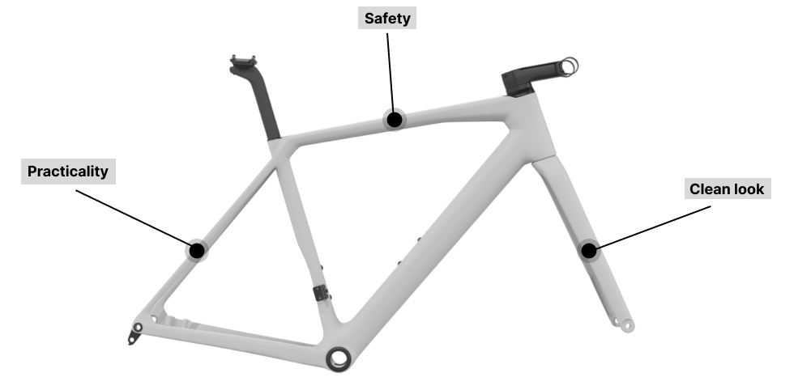

<!-- Frame Details Section -->
<div class="frame-details-section">
  <div class="container-xl">
    <h3 class="section-title">Laminated bamboo frame</h3>
    <div class="row">
      <!-- <div
        class="col-lg-auto order-lg-1 order-2 d-flex justify-content-center flex-column"
      >
        <ul class="frame-component-list" data-aos="fade-right">
          <li>Safety</li>
          <li>Practicality</li>
          <li>Clean look</li>
        </ul>
      </div> -->
      <div class="col-lg-12">
        <div class="section-image" data-aos="fade-left">
          
        </div>
      </div>
    </div>
    <div class="frame-feature-block">
      <p class="section-description">1. Safety:</p>
      <p>
        With our advance technology of manufacturing, we wore able to design a
        frame, that takes advantage of the low density of the bamboo, resulting
        in high strength joints without weight penalty.
      </p>
    </div>
    <div class="frame-feature-block">
      <p class="section-description">2. Practicality:</p>
      <p>
        Our adjustable dropouts allow for different brake and derailleur
        configurations through the lifetime usage of the bike.This modular
        sistem facilitate a beter chain tensioning, a belt drive fitting option
        and proper positioning of the brake caliper
      </p>
    </div>
    <div class="frame-feature-block">
      <p class="section-description">3. Clean look:</p>
      <p>
        From the beginning of the development process, the goal was to bring the
        integration of cable routing to a completely new level. We design our
        frames to allow all cables to run fully internally, giving your bike a
        functional and a premium look.
      </p>
    </div>
  </div>
</div>
<!-- Frame Details Section -->
